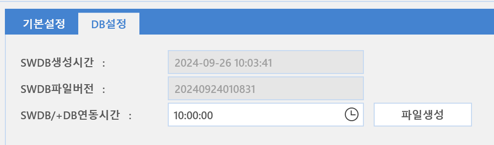

2-1-4-2. DB설정
2-1-4-2. DB설정
Source: https://www.sweeper.or.kr/etc/manual/2142DB.html
2-1-4-2. DB설정
2. 홈 ›› 2-1. 환경설정 ›› 2-1-4. 소프트웨어 ››


SWDB DB업데이트와 SPC 라이선스 정보를 설정할 수 있습니다.

-
DB 업데이트 설정
-
SWDB 생성시간 : 소프트웨어 DB가 만들어진 시간을 표시합니다.
- SWDB 파일 버전 : 소프트웨어 DB 파일 버전을 표시합니다.
- SWDB/+DB 연동시간 : 소프트웨어 DB 연동 예약 시간을 설정 합니다.
-
파일생성 : 관리자가 변경한 SWDB DB에 대한 내용을 파일로 생성하며, 추후 에이전트가 재시작(소프트웨어 검색)시 변경된 파일을 가져가도록 하기 위한 버튼입니다. 예약시간에 자동 생성되지만, 즉시 변경이 필요한 경우 클릭합니다.
-
SWDB 설정 : 한국소프트웨어저작권협회(SPC)의 소프트웨어 DB 연동을 위한 설정입니다.

- 연동 여부 : 연동 여부를 설정합니다.
- DB 동기화 : 강제 연동이 필요한 경우 클릭합니다.
-
오프라인 동기화 : 폐쇄망으로 운영되는 고객사의 경우, 수동으로 DB동기화를 하기 위한 버튼입니다.
-
엔지지어로부터 제공된 최신 DB파일을 선택하면 최신화가 됩니다.
-
최종 동기화 시간 : 최종 동기화 되었던 시간을 표시합니다.
-
동기화 결과에 상관 없이 업데이트 됩니다.
-
최종 동기화 성공시간 : 동기화 최종적으로 성공되었던 시간을 표시합니다.
- 동기화 버전 : 공통 SWDB의 최근 동기화된 버전을 표시합니다.
-
동기화 버전 (커스텀) : 커스텀 SWDB의 최근 동기화된 버전을 표시합니다.
-
해당 기능을 사용하기 위해서는 담당 엔지니어와 협의하셔야 합니다.
-
라이선스만료일 : SWDB 라이선스 만료일이 표시됩니다.
-
폰트 동기화 : 폰트 동기화가 필요한 경우 클릭합니다.
-
+DB 설정 : 한국소프트웨어저작권협외(SPC)의 SAMDB 연동을 위한 설정입니다.

- 연동여부 : 연동 여부를 설정합니다.
- DB 동기화 : 강제 연동이 필요한 경우 클릭합니다.
-
오프라인 동기화 : 폐쇄망으로 운영되는 고객사의 경우, 수동으로 DB동기화를 하기 위한 버튼입니다.
-
엔지니어로부터 제공된 최신 DB파일을 선택하면 최신화가 됩니다.
-
최종 동기화 시간 : 최종 동기화 되었던 시간을 표시합니다.
-
동기화 결과에 상관 없이 업데이트 됩니다.
-
최종 동기화 성공시간 : 동기화 최종적으로 성공되었던 시간을 표시합니다.
- 동기화 버전 : 최근 동기화된 버전을 표시합니다.
- 라이선스 키 : SAMDB 라이선스 키를 입력합니다.
- 등록 아이피 : SAMDB 인증에 필요한 서버 IP를 입력합니다.
- 등록 MAC : SAMDB 인증에 필요한 서버 MAC을 입력합니다.
주의사항
SAMDB설정에서 등록아이피와 등록MAC은 SAMDB사용을 위해 소프트웨어 저작권 협회에 제공한 정보로, 해당 정보의 서버만이 SAMDB와 동기화를 할 수 있습니다. 만약 해당 서버의 HW문제로 아이피나 MAC정보가 변경되는 경우에는 반드시 SPC에 해당 내용(네트워크 정보 변경)을 통보하여, 정보 변경을 하시기 바랍니다.
© Copyright SWeeper Inc.. All Rights Reserved